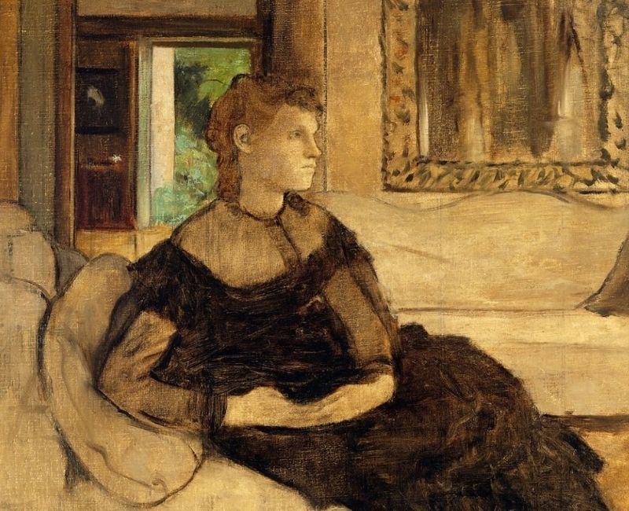

Imaginative Composition
Painting Imaginative Composition
Painting is the skill of creating an image by using paint.
Materials used in painting are:
- Paints
- Painting surfaces like paper, cloth, canvas, stone, skin, wall, boards
- Tools like paintbrush, sponge, paint palette, spatula
NOTE: A palette is a flat surface on which a painter arranges and mixes paints. It can be made of wood, plastic, or carton paper.
Tools and materials used for painting can be found or made locally within our environment.
Factors to Consider When Painting
- Depth
- Proportionality
- Center of interest
- Subject matter
Every painting is based on a theme or topic, also known as the subject matter. A painting can be about sports, family, education, celebrations, among others.
The part of a painting that attracts your attention is known as the center of interest. You can create a center of interest in painting by:
- Making a particular object bigger than the rest
- Using contrasting colors (different colors)
- Placing an object at the center of the painting
Painting the actual size and shape of an object compared to another is called proportionality.
On the painting surface, objects that are near you should be placed lower and be bigger in size, while objects far from you should be placed higher and smaller in size. This helps create depth and make the painting look real.
Creating Tonal Value in Painting
In painting, an object can be made to look real by varying the lightness and darkness of the colors used. The lightness or darkness of color is also known as the tonal value of the color.
Tonal value is created using shading and tinting techniques.
- Shading involves adding black to a color to make it look dark.
- Tinting involves adding white color to a color to make it light.
The addition of black or white color creates tonal variation.
To create a tonal value effect when painting, identify the direction of light reflecting on the object. Apply dark-colored paint to the object that you want to be dark and use white color on areas that you want to be light. Merge the two colors gradually.
